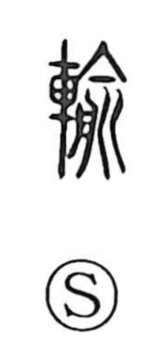

輸

Kun: itasu, okuru | On: yu
transport ・ send ・ deliver ・ bring about
Explanation
A phono-semantic character: 輸 sets the cart radical 車 beside 兪, which supplies the sound and a vivid image. 兪 depicts lancing an abscess with a knife and draining the pus and blood into a vessel—the “moon” component here is actually 舟, a tub or tray—hence the idea of healing. Joined with 車, the sense shifts to loading goods onto a vehicle and moving them along, and by extension to sending or forwarding, delivering, and bringing something about.